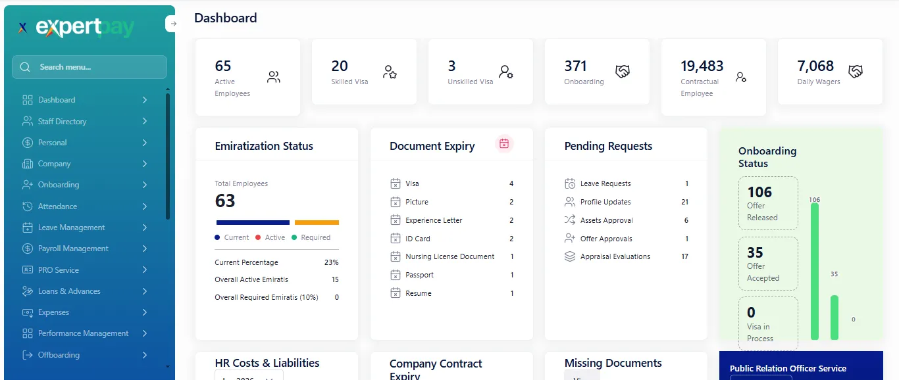
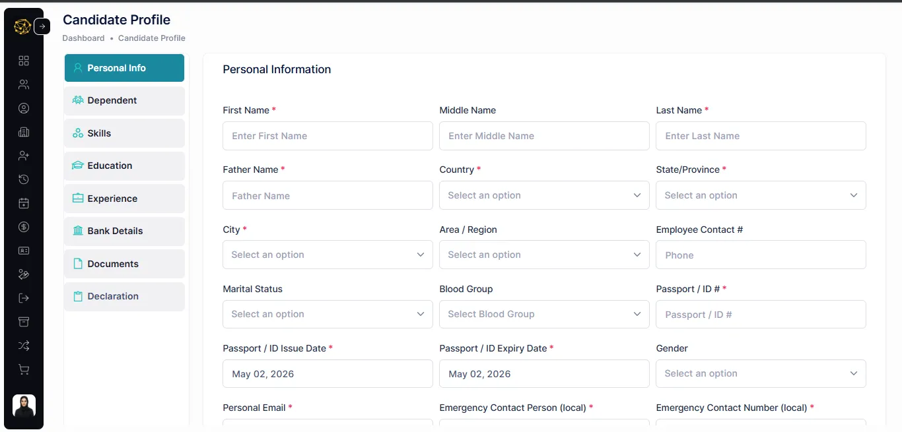
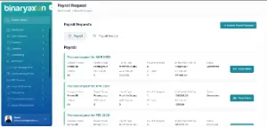
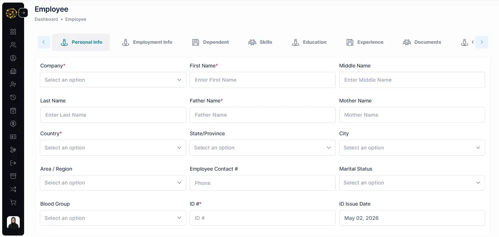

HRMS Reimagined — Intelligent by Design
Prime HR is a comprehensive, cloud-based Human Resource Management System (HRMS) designed to streamline and automate every dimension of the employee lifecycle — from onboarding and daily attendance to payroll processing and final settlement. Built for multi-company, multi-location enterprises, Prime HR consolidates HR operations into a single, role-driven platform.
Dashboard Overview
The first screen users see upon login — tailored by role, providing a real-time snapshot of HR KPIs and pending actions.
Admin Dashboard
- Real-time KPIs: Active, Contractual, Daily Wager, Permanent
- Pending Requests: Leave, Resignations, Profile Updates, Offer Approvals
- HR Costs & Liabilities breakdown
- Active Employees trend, New Induction, Absent Without Leave charts
Employee Dashboard
- Profile snapshot: name, designation, tenure
- Monthly attendance summary
- Star rating & Pay Dashboard shortcut
- Real-time geo-location map view

Personal Module
Employee self-service area providing access to company policies, payslips, and tax documentation.
- Company Policy – view and download PDFs
- PaySlip – search by company, department, employee, month; merge and yearly download
- Tax Certificate – annual tax certificates by company and fiscal year


Employee Queries
Centralised inbox for HR managers to review and approve employee profile update requests. Highlights records requiring attention or with expired data.
- Approve or reject profile changes
- Colour-coded rows for expired documents
Attendance Management
End-to-end time and attendance management with biometric integration, mobile punch‑ins, and client‑specific policies.
Time Table (Shift Time)
Granular shift timing, half‑day thresholds, OT rules
Shift Category
Group shifts (Morning, Evening, Night)
Shift
Named shifts with symbolic codes
Assign Shift
Bulk or individual shift assignment
Approved Strength
Headcount vs. approved per department
Mobile Attendance
Geo‑tagged punch‑in/out records
Manual Attendance
Add or bulk upload attendance
Machine Logs
Raw punch logs from biometric devices
Employee Overtime Approval
Review and approve OT claims
Short Hour Shift Assignment
Reduced‑hour shifts for flexible arrangements
Client Working Days
Client‑specific working day calendars
Client Allowance Policy
Allowance rules tied to clients
Client Sandwich Policy
Rule‑based leave treatment per client
Register Fingerprint
Biometric registration from HRMS
Scan Fingerprint
Live fingerprint verification
Auto Half‑Day Leave Adjustment
Automatic half‑day leave deductions
Leave Management
Complete leave lifecycle — policy definition, public holiday calendars, employee applications, approvals, and historical records.
- Leave Type Policy – granular rules per company, department, grade, etc.
- Public Holiday – per‑company holiday calendars
- Leave Application – self‑service with balance view
- Leave Request – multi‑level approval inbox
- Leave History – full audit trail and export

Payroll Management
Full‑cycle salary processing engine with WPS, final settlement, and rich reporting.
Payroll Setup
- Salary Components – earnings & deductions
- Payroll Group – company‑bound groups
- Establishment – for WPS compliance
- Leave Encashment – policy rules
Payroll Process
- Employee Salary Setup
- Upload Payroll / Salary Adjustments
- Payroll Inputs
- Initiate Payroll – one‑click processing
- Payroll Request & Approvals
- Generate WPS / Bank Transfer
- Final Settlement – EOS benefits
- Payment Process
Payroll Reports
- Payroll Register, Pay Summary
- Pension Report, Adhoc Payment
- Yearly Salary, Department‑Wise Summary
- Gratuity Report, Consolidated Payment
- Salary Reconciliation, Payroll Reconciliation
- Salary Release Hold, EOS Status
- WPS / Non‑WPS Detail
Geo Fencing
Location‑based attendance validation and employee movement tracking. Enforces attendance only within approved geographic boundaries.
- User Location – GPS coordinates per employee with route map
- Polygon – define geographic zones on interactive map


Advance / Loan
Manage employee financial assistance requests — both salary advances and formal loans — with configurable policies and approval workflow.
- Advance/Loan Policy – max instalments, salary eligibility
- Application – self‑service with amount and repayment schedule
- Request Approval – linked to payroll deductions
Document Archiving
Structured digital repository for storing, categorising, and retrieving employee and organisational documents.
- Document Type – categories with mandatory/optional flags
- Document Policy – collection rules, expiry alerts


Assets Management
Track company‑owned assets from procurement requisition to assignment and inventory management.
- Assets Management Policy – categories, depreciation, eligibility
- Assets Requisition – employee/department requests
- Assets Approval – manager review
- Assets Assignment – record handover
- Inventory – full register with status
- Employee Assets – view assigned assets
Procurement Management
Manage purchase order lifecycle, from requisition through vendor selection and order fulfilment.
- Purchase Orders – auto‑generated PO numbers, linked to requisitions
- Approve, view, print, and download ECN reports

Appraisal (Performance Management)
Structured performance evaluation framework, from KPI definition to scoring and employee appraisal initiation.
Evaluation Setup
- Scale – define rating scales (1‑5, Excellent/Good)
- KPI – create role/department KPIs with weightage
- Overall Rating – bands based on score ranges
- Evaluation Setup – assemble forms with Scale, KPI, Rating
Evaluation Process
- Evaluation Marking – score employees against KPIs
- Initiate Employee Evaluation – launch formal cycles
Gate Pass
Control and record employee/visitor entry and exit at facility gates with configurable visit types and scan‑based verification.
- Visit Type Policy – define types with eligibility rules
- Visit Application – employee self‑service
- Scan Visit – gate officer validation
- Visit Request – manager approval inbox
- Visit History – full log


Meal Pass
Manage canteen meal entitlements and consumption tracking for employees.
- Meal Management – record and track daily meal passes
- Canteen reports: Meal Canteen, Meal Attendance, Meal Summary
- Integration with attendance for eligibility
Resign (Offboarding)
End‑to‑end employee resignation process, from policy definition to application, approval, and final settlement trigger.
- Resign Policy – notice period and applicability
- Resign Application – self‑service form
- Resign Request – manager/HR approval
- Resign History – audit trail

Utilities Module
Batch processing tools for payroll and HR administrators to execute system‑level operations.
Process Attendance
Batch‑process raw punch data into computed attendance records
Payslip Raw Data
Extract raw payslip data for external integration or reconciliation
Publish Payroll
Make processed payslips visible to employees in self‑service
Reports Module
Comprehensive set of pre‑built operational reports across attendance, meals, gate pass, and other HR functions.
Attendance Reports
- Daily Absenteeism, Strength, Man Hours
- Monthly Absenteeism, Register, Time Sheet
- Attendance Summary, Leave‑Attendance Register, Leave Balance
Meal Reports
- Meal Canteen Report
- Meal Attendance Report
- Meal Summary
Gate Pass Reports
- Visit Report – comprehensive log
Other Reports
- Costing Report
- Employee Card (printable ID)
- Detail of Invoice Report
Logs Module
System‑level visibility into application errors for troubleshooting and audit.
- Mobile Error Logs – view errors from Prime HR mobile app

Setup Module
The master data configuration hub — all foundational reference data for the entire system.
Company
Multi‑company profiles
Employee Master
20+ tabs, bulk upload, advanced filters
Organisation Structure
Departments, designations, sections, grades
Geography
Country, State, City, Region
HR Reference Data
Religion, Relation, Skills, Nationality, etc.
Financial References
Bank, Currency, Labour Card, OH Card
Vendor
Supplier master for procurement
Procurement Items
Item and Item Category
System Configuration
Notifications, Terms, Tags, Attendance Machine, Employee Card Config
Employment Type
Permanent, Contractual, Daily Wager, etc.
Gender
Classification options for employee profiles
Security Module
Fine‑grained control over user access — permission, role, and user management.
Permission
Page‑level permissions (Read, Write, Edit, Delete, Approve)
Role
Bundle permissions into roles (HR Manager, Payroll Officer, etc.)
User
Register users, link to employees, assign roles
Onboarding Module
Manage the pre‑joining process for new hires — from offer letter generation to candidate acceptance.
- Offer Form Template – configurable field sets
- Create Offer – generate formal offer letters
- Offer Approval – multi‑level approval chain

General Setting
Cross‑cutting configuration options for approval workflows, communication, and templates.
Approval Hierarchy
Multi‑level approval chains for all workflows
Employee Communication
Broadcast announcements to employee groups
User Group Employees
Create groups for targeted notifications
Letter Type
HR letter categories (Experience, Warning, etc.)
Setup Email Template
Dynamic email templates with placeholders
Setup Letter Template
Formatted HR letter templates for printing
Module Index
Quick‑reference index of all Prime HR modules.
| # | Module | Primary Purpose |
|---|---|---|
| 1 | Dashboard | Real‑time HR KPIs and self‑service overview |
| 2 | Personal | Employee access to policy, payslips, tax certificates |
| 3 | Employee Queries | HR review and approval of profile updates |
| 4 | Attendance | Time & attendance with biometric and mobile support |
| 5 | Leave Management | Leave policy, applications, and approvals |
| 6 | Payroll Management | Full‑cycle payroll, WPS, settlement, reporting |
| 7 | Geo Fencing | Location‑based attendance validation |
| 8 | Advance / Loan | Financial assistance with policy‑driven approvals |
| 9 | Document Archiving | Digital repository with policy‑based rules |
| 10 | Assets Management | Asset lifecycle from requisition to inventory |
| 11 | Procurement | Purchase order management |
| 12 | Appraisal | KPI‑based performance evaluation |
| 13 | Gate Pass | Facility entry/exit control |
| 14 | Meal Pass | Canteen meal entitlement tracking |
| 15 | Resign / Offboarding | Resignation workflow and settlement trigger |
| 16 | Utilities | Batch processing tools |
| 17 | Reports | Pre‑built HR, Payroll, Attendance, Meal, Gate Pass reports |
| 18 | Logs | Mobile error logging |
| 19 | Setup | Master data configuration |
| 20 | Config | System‑level classification tables |
| 21 | Security | Role‑based access control |
| 22 | Onboarding | Offer letter generation and approval |
| 23 | General Setting | Approval hierarchies, communication, templates |